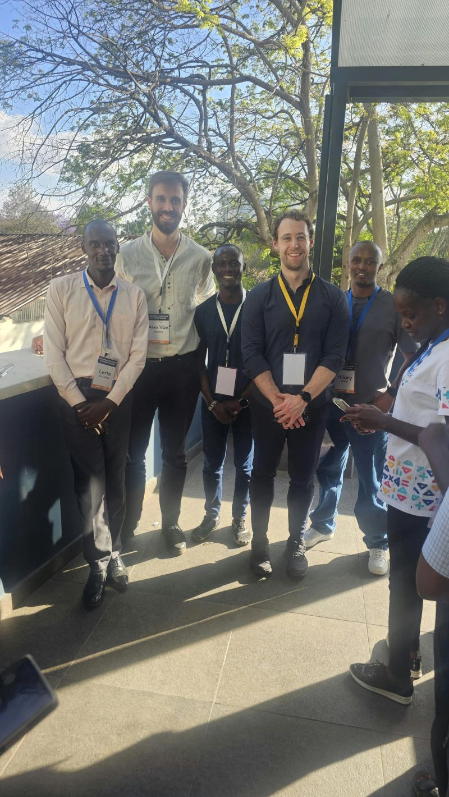
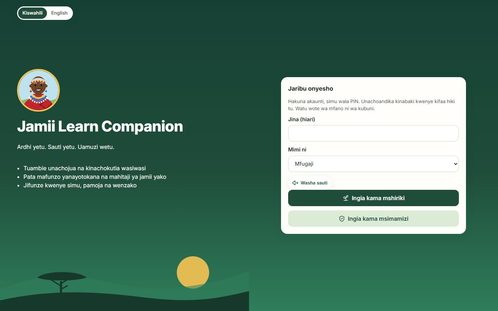
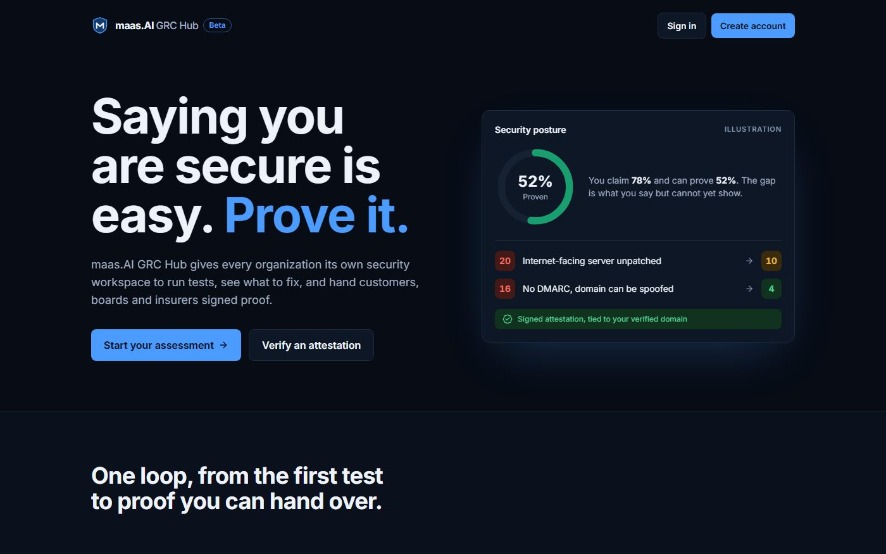
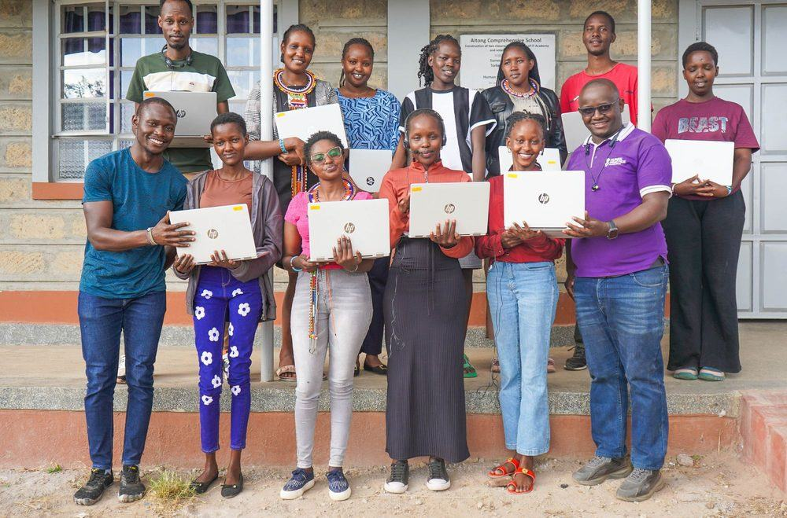
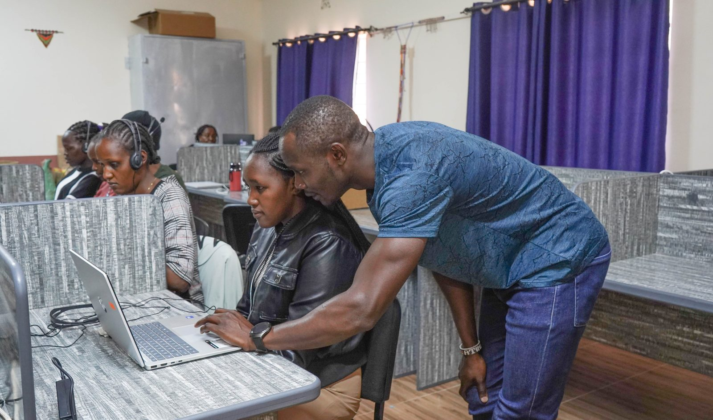
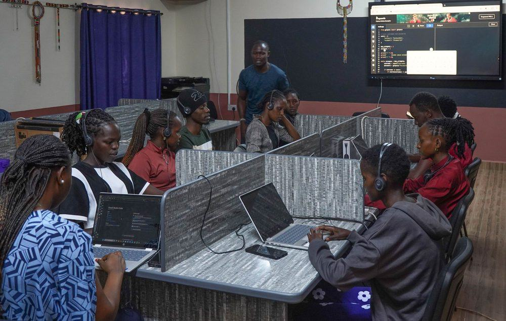
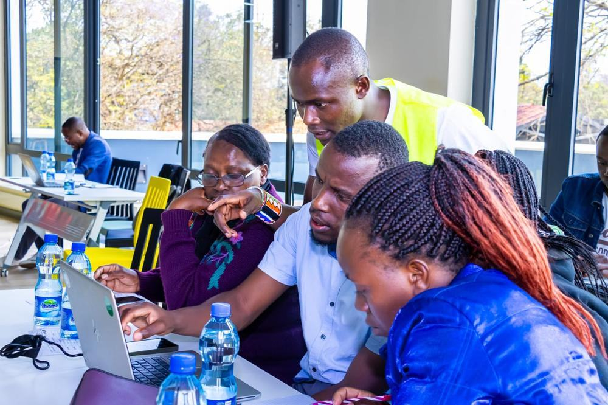
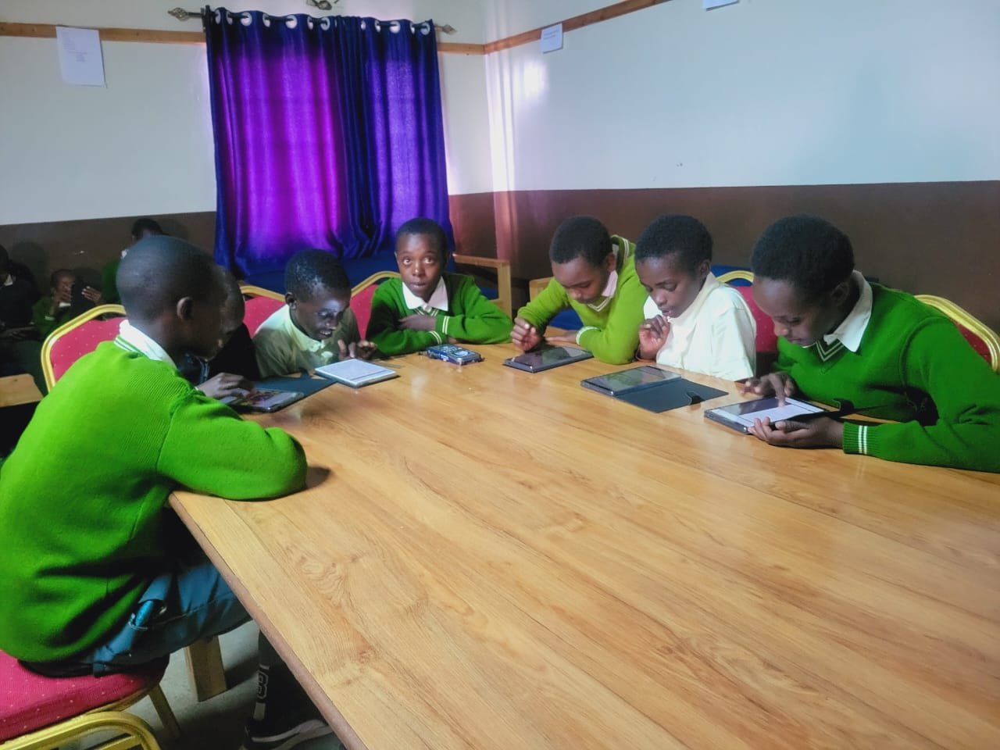

Experience
Professional journey
Every role below started with someone stuck on a real problem: a teacher with no signal, a young person who had never held a mouse, a community asked to sign something it was never taught to read. Here is what I did about each one, and what changed.

AI in Education: Trainer, Co-Designer and Builder
2026 – PresentIndependent · With teachers and ecosystem builders across Kenya
One teacher in the room had no internet, and did not let that stop them. Tired of losing hours to attendance registers, lesson prep and marking, they built an offline Excel tool that fixes all three. No vendor, no app, no signal. Just a teacher who knew the problem better than anyone selling a solution ever could.
That was my favourite moment from our co-design session, and it is what real EdTech looks like in Kenya: teachers solving their own problems, with technology as their companion rather than their boss. My work now is making that moment happen in more staff rooms. And when a problem needs more than a spreadsheet, I build the tool myself.
What I do
- Co-design with teachers, with EdTech East Africa, Teach For Kenya and Anthropic: teachers bring a challenge from their own classroom and leave with a working solution they built themselves.
- Train teachers and school leaders to use AI in teaching and learning, starting from the daily jobs that eat their time: planning, assessment, record keeping and feedback.
- Work alongside other ecosystem builders, from EdTech organisations to programme designers, so what one school figures out can travel to the next.
- Build practical tools for learning challenges that nobody else is solving, and put them live where people can use them today:

Jamii Learn Companion Carbon deals are being offered for community land in language few people on that land were taught. This companion lets a herder or a parent learn carbon markets on their own phone, in Kiswahili or English. It starts by asking what they already know and what worries them, teaches through a conversation they can listen to, and plants a tree on screen as they learn. Open the live demo
maas.AI GRC Hub Schools, NGOs and small businesses hold data that families and partners trust them with, yet most can only say they are secure. This hub gives each organisation its own workspace to run security tests, see what to fix first, and hand customers, boards and insurers signed proof. Its score shows the gap between what you claim and what you can prove. Open the public beta
Skills Development Program Lead, HPF ICT Academy
Jan 2026 – PresentHuman Practice Foundation · Aitong, Maasai Mara, Kenya
Most of the young people who walk into the academy in Aitong have never used a computer. Many grew up herding, far from any lab or office. One cohort later, those same pastoralist youth are earning verified income online, from the field they trained in. The distance between never having held a mouse and sending work to a paying client is the whole story of this fellowship. I designed it to close that distance, and I measure myself by how many people make it across.
What I did
- Designed this learn-to-earn fellowship and run it, with three tracks: web development, cybersecurity and data analytics.
- Took a cohort of 26 fellows all the way through to paid work online: 95% passed, 86% finished, and graduates now earn verified income on digital work platforms. The cohort rated the programme 4.1/5.
- Mentoring 20 fellows in the live cohort: 11 in full-stack development (MERN) and 9 in data analytics and AI.
- Fellows on the data and AI track build for the problems around them: climate change, employability and mental health. Every brief starts from a need in their own community, so somebody is already waiting for what they build.
- Manage a KES 25M annual budget covering delivery, fellow stipends and ICT infrastructure.
- Grew the fellowship from pilot to Cohort 2 and negotiated the Phase 2 partnership structure with Power Learn Project Africa.
- Own the full cycle, from recruitment and onboarding to coaching, monitoring and impact reporting, and supervise the trainers and support staff who deliver it.
- Kept classes running through the long rains and power and connectivity outages with offline sessions, catch-up schedules and buffer weeks, because a fellow who falls behind in week three rarely comes back.
- Report weekly to Power Learn Project Africa and HPF leadership and monthly to donors, and keep fellow records and data protection in good order.




Digital Literacy Program Manager, Mt Kenya Region
Mar 2024 – Jan 2026Human Practice Foundation · Mount Kenya Region, Kenya
When I started, there was no digital literacy programme in these schools. There were devices some teachers were nervous to touch, and pupils who had never used one for learning. I could have started in the classroom. I started in the staff room instead, because a teacher who feels confident with technology passes that confidence to every learner they will ever teach. By the time I moved on, that one decision had reached 798+ teachers and more than 5,000 learners.
What I did
- Built a school digital literacy programme from zero and scaled it to 23+ schools, owning the curriculum, the teacher training and the M&E behind it.
- Designed and delivered the teacher training curriculum on bringing digital literacy into everyday lessons.
- Set up data collection and reporting in Salesforce and Power BI, so the education team made decisions from real usage, not guesses.
- Wrote the standard operating procedures, so the programme could run the same way in every school, with or without me.
- Planned field visits and trainings around school calendars, exams and rural transport, keeping school heads and teachers on side.
- Deployed library management systems across schools, trained staff to run them, and kept hardware, software and networks working.
Co-Lead, Programme Design, SELution
2026 – PresentRegional Play-Based Learning Programme · East Africa · Independent initiative
Most low-resource primary schools will never have a robotics lab. What every one of them has is children who learn fastest when they are playing. SELution starts from that. It brings feelings, friendship, reading, numbers and even coding into the classroom through games and low-cost kits, so a child in Kajiado gets the same spark as a child in a city school.
What I do
- Co-designing a play-based programme that combines social emotional learning, foundational literacy and numeracy, unplugged coding and low-cost robotics.
- Designed a cascade of master trainers, district facilitators and fortnightly teacher coaching, so the programme spreads without me in the room.
- Built a per-child measurement system that rolls up to cluster dashboards, so every child's progress is seen, not averaged away.
- Scoping a first pilot of 8 to 15 schools with a Kajiado-based implementing partner.
Assistant Financial Accountant & ICT Support
Nov 2021 – Dec 2023The Lewa Wildlife Conservancy · Isiolo, Kenya
Conservation does not pause when a laptop crashes or a donor report is late. At Lewa I was the person more than 150 staff called when systems failed, and one of the people making sure every donor shilling could be accounted for. It taught me something I have carried into every programme since: trust is built on unglamorous things done right, every single day. Systems that stay up, audits that come back clean, reports that tell the truth.
What I did
- Primary IT support for 150+ staff, resolving 95% of tickets within SLA and keeping infrastructure at 99.9% uptime.
- Supported two consecutive annual audits with zero major findings.
- Produced monthly donor analysis and quarterly financial reports for management and external stakeholders.
- Trained staff in Microsoft 365 and cybersecurity, administered Sage Evolution ERP, and supported accounts payable and receivable.
- Cut IT procurement costs by 15% through structured vendor negotiations and hardware lifecycle planning.
Backend Engineer & Onboarding Manager
Jan 2019 – Jan 2020Alatpres Technologies · Kenya
My first job was writing the code nobody sees. More than 50,000 people used the applications I worked on, and every one of them trusted that the system behind the screen would hold. That is where I learned to care about security long before it was in my job title, and why everything I build today, from teacher tools to maas.AI GRC Hub, starts with keeping people's data safe.
What I did
- Built and maintained server-side architecture for 15+ web applications serving 50,000+ active users.
- Cut application vulnerabilities by 30% and improved stability by 20% through targeted hardening and work across teams.
- Onboarded new users and clients onto the platforms, turning technical systems into something people could actually use.